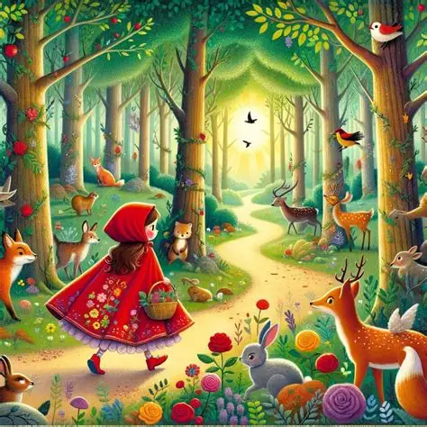
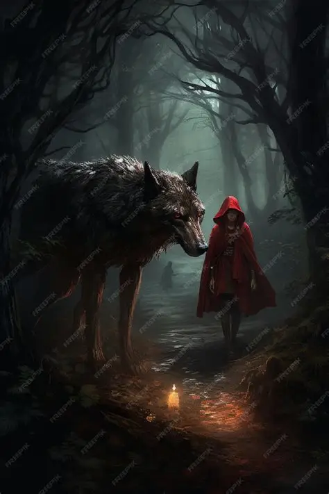
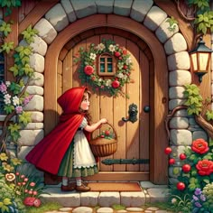

Capítulo 1: Caperucita Roja

Érase una vez una niña llamada Caperucita Roja. Un día, su madre le pidió que llevara una cesta de comida a su abuelita, que vivía al otro lado del bosque.
Érase una vez una niña llamada Caperucita Roja. Un día, su madre le pidió que llevara una cesta de comida a su abuelita, que vivía al otro lado del bosque.

Caperucita comenzó su camino hacia la casa de su abuelita. Mientras atravesaba el bosque, se encontró con un lobo que le preguntó adónde iba.

El lobo, al enterarse de que Caperucita iba a casa de su abuela, decidió tomar un atajo para llegar antes que ella. Caperucita continuó tranquilamente su camino por el bosque.

El lobo llegó primero a la casa de la abuela. Llamó a la puerta y consiguió entrar. Poco después, Caperucita llegó con su cesta y llamó a la puerta.
Un cazador que pasaba cerca de la casa escuchó unos ruidos extraños. Entró rápidamente y consiguió salvar a Caperucita y a su abuela. El lobo huyó y nunca volvió a molestarlas.